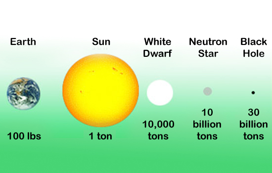
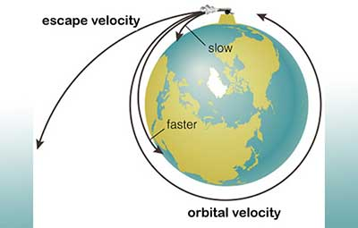
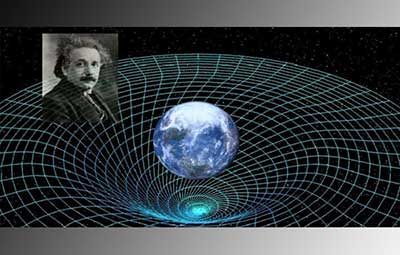

Gravity of a Black Hole
The gravity of a typical black hole is so strong that a person who weighs 100 pounds on Earth would weigh 30 billion tons at the point just before he or she was dragged into the black hole’s inescapable gravity well.
Escape Velocity
On Earth, escape velocity is 7 miles per second (11 km/sec). For a black hole, this velocity reaches the speed of light (186,000 miles/second) at the point of no return.
Black Holes Capture Light
But why is light, which has no mass, captured into a black hole? Light, which ordinarily travels a straight path, follows a curved path around a gravitational field.
